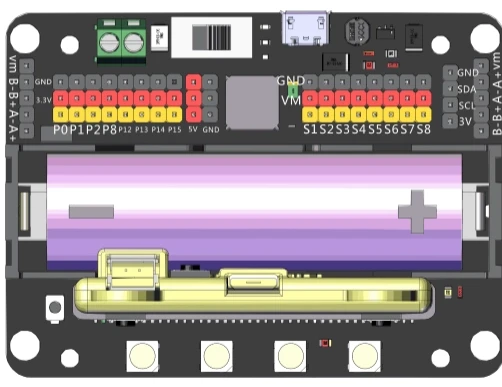

선의 양 끝을 보면 종류를 알 수 있어요
점퍼선은 보드와 부품 사이에 전기와 신호가 오갈 길을 만들어 주는 선이에요.
세 가지 점퍼선
사진을 눌러 크게 보세요점퍼선 자체에는 정해진 +·−가 없어요. 연결한 단자가 역할을 결정해요.
한 동작씩, 천천히 따라 해요
사진으로 보는 연결 순서예요. 실제 꽂는 동작은 선생님의 시범을 함께 확인해요.
앞면을 확인하고 수직으로 꽂아요
- USB·배터리·외부 전원을 모두 분리해요.
- LED와 A·B 버튼이 보이는 앞면을 사진과 맞춰요.
- 금색 가장자리 단자를 검은 연결 슬롯과 일직선으로 맞춰요.
- 보드 양쪽 윗부분을 잡고 천천히 수직으로 눌러요.
뺄 때도 전원을 분리하고 보드 양쪽을 잡아 수직으로 빼요. 좌우로 세게 비틀지 않아요.
사진 가이드
1 / 8책상 위 보드와 같은 사진을 보고, 방향을 맞춰요
우리 수업은 마이크로비트를 꽂아 쓰는 Robotbit 확장보드를 씁니다. USB 단자 같은 기준점을 찾아 사진과 방향을 맞추면 핀 위치를 찾기 쉬워요.
마이크로비트 확장보드 (Robotbit) 살펴보기
왼쪽 P 계열 핀과 오른쪽 S1~S8 영역은 역할과 전원 구성이 달라요. 따로 확인해야 해요.
이름표를 보며 위치 확인하기
| 부분 | 하는 일 | 우리 수업에서 |
|---|---|---|
| 센서 연결 핀 (P0~P15) | GND·3.3V·신호 줄로 센서를 연결 | 초음파 P14·P13, 네오픽셀 P15 |
| 서보 모터 연결 핀 (S1~S8) | GND·VM·신호 줄로 서보를 연결 | 서보모터 S1 |
| 18650 배터리 홀더·전원 스위치 | 보드와 모터에 전원 공급 | 서보를 쓰려면 스위치를 켜요 |
| USB 충전 포트 | 배터리 충전 전용 | 코드는 마이크로비트 USB로 넣어요 |
| 마이크로비트 연결 슬롯 | 마이크로비트를 꽂는 곳 | LED 면이 앞으로 |
“3.3V 지원”은 모든 V·VM 단자가 3.3V라는 뜻이 아니에요. 왼쪽 P핀 줄의 빨간 줄은 3.3V, 오른쪽 S1~S8 줄의 빨간 줄은 VM(배터리 전원)입니다.
검정 G, 빨강 V, 노랑 S로 구별해요
GND는 회로의 기준점, V·VCC는 전원, S는 신호 연결점이에요. 색과 글자를 함께 확인하고, 핀 번호는 프로그램의 이름과 맞춰요.
사진에서 줄을 누르면 정답 위치가 굵은 색 테두리와 이름표로 표시돼요.

핀 번호는 위에서 세는 순서가 아니에요
P0, P1, P2 같은 표기를 읽어요. 확장보드의 S1은 P1과 같은 핀이 아니에요. 공통 코드는 초음파 P14·P13, 네오픽셀 P15, 서보 S1을 씁니다.
초음파센서 · 서보모터 · 네오픽셀을 한 보드에
실제로 꽂기 전에 사진이나 3D 작업대에서 먼저 연결해 봅니다. 연결할 두 핀을 차례로 누르면 선이 생깁니다. 공통 코드와 같은 핀 번호를 써야 합니다.
- Trig P14 초음파 보내기
- Echo P13 초음파 받기
- S1 서보모터
- P15 네오픽셀 6개
작은 핀은 사진 아래 이름표를 눌러도 연결됩니다.GND 전원 신호 Echo 신호
3D에서도 연결 기록과 연습 단계가 이어집니다.
드래그로 회전 · 휠 또는 두 손가락으로 확대 · 핀을 클릭하거나 아래 이름표로 연결합니다.
연결 관계를 배우는 간략 모형입니다. 핀 간격·부품 비율은 보기 쉽게 조정했습니다. 실제 위치는 사진 보기와 대조하세요.
내가 꽂은 선
선을 연결하면 여기에 기록됩니다.
선의 연결 관계를 배우는 연습입니다. 실제 하드웨어를 움직이지는 않습니다.
이 페이지는 핀랩(PINLAB)의 「점퍼선 알아보기」, 「꽂고 빼는 방법」, 「내 보드 알아보기」, 「G · V · S와 핀 번호」 수업과 「거리 반응 장치 종합 연결」 예제를 옮겨 만들었습니다.
- 확장보드 사진, 마이크로비트 장착 사진, Robotbit 해부도: 핀랩 자료
- 수–수 점퍼선: oomlout, Wikimedia Commons, CC BY-SA 2.0
- 암–수 점퍼선: Edwiyanto, Wikimedia Commons, CC BY-SA 4.0
- 암–암 점퍼선: oomlout, Wikimedia Commons, CC BY-SA 2.0
- 점퍼선 사진은 모두 크기를 줄였습니다.
- 초음파센서 사진: Suyash Dwivedi, Wikimedia Commons, CC BY-SA 4.0 (크기를 줄임)
- 서보모터 사진: Suyash Dwivedi, Wikimedia Commons, CC BY-SA 4.0 (잘라서 크기를 줄임)
- 네오픽셀 사진: OpenAI 이미지 생성으로 만든 교육용 이미지